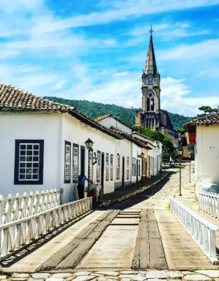

Goiás é um estado do Centro-Oeste do Brasil, com uma economia robusta, centrada na agropecuária, especialmente na produção de soja, milho e na pecuária. É um dos maiores produtores de grãos e possui um dos maiores rebanhos do país. A indústria também é forte, destacando-se na fabricação de veículos e produtos alimentícios. O estado tem uma rica cultura, com festas tradicionais como as Cavalhadas de Pirenópolis, e é conhecido pelas belezas naturais, como as águas termais de Caldas Novas. O clima é tropical, favorecendo a agricultura. O atual governador é Ronaldo Caiado, do União Brasil, que assumiu em 2019 e foi reeleito em 2022. Ele tem implementado políticas focadas no desenvolvimento econômico e na modernização da gestão pública.
